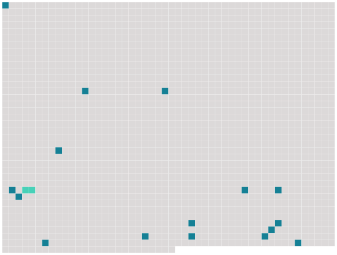

Longueur nb maillons : 17 mentions |
 |
[On] prolongea le déjeuner, qui fut des plus joyeux — on n'avait pas l'avantage d'un nouvel hôte souvent à Némoville — et le curé plut à Roger et à Paul par son esprit autant que par sa bonté, dont il donna bientôt des preuves. [26 phrases] En quittant Marcelle, [on] se dirigea vers une demeure un peu éloignée des autres.
[On] frappa à la porte et un domestique vint ouvrir. [18 phrases] [On] retourna à la résidence du gouverneur, où un lunch était servi. [13 phrases]
Le curé consentit avec plaisir, et [ils] partirent [tous trois] , car Paul était de la partie ; il ne quittait Roger que rarement.
Ce fut vraiment une pêche miraculeuse, et Paul soutint que c'était le curé qui [leur] portait chance.
Quand [on] eut une provision considérable de poissons de toutes sortes, [on] retourna à la ville sous-marine. [9 phrases]
[On] dirigea l'embarcation du côté de l'épave, et bientôt, [on] put constater que c'était un canot, qui s'en allait au gré des flots, sans direction. [1 phrases]
»
Une femme était étendue au fond sans mouvement : elle semblait morte, mais en se penchant sur elle [on] vit qu'elle respirait encore.
[On] se hâta de transporter la naufragée à Némoville, et [on] accosta à la résidence de Marcelle, où le prêtre suggéra de laisser la malade.
[On] manda le docteur Desmarais, qui donna des soins efficaces à la jeune fille — car c'était une jeune fille, et elle était fort belle. La naufragée reprit bientôt ses sens, et comme [on] ne pouvait pas convenablement l'installer dans le « Nautilus », Roger demanda à Marcelle de la garder auprès d'elle, ce que celle -ci accepta avec empressement. |
 |
La ressource peut être téléchargée sur la page Ortolang
Si vous avez des questions ou vous voyez des erreurs, merci d'envoyer un mail à silvia.federzoni89@gmail.com
Site développé par S. Federzoni (contact)